Apresentação da Unidade
Olá, estudante-trabalhador! Seja bem-vindo!
Que bom ter você aqui para iniciar uma jornada de aprendizado sobre a promoção da saúde mental no Sistema Único de Saúde (SUS). Esse tema é fundamental para o bem-estar integral das pessoas, especialmente no contexto do sistema prisional. O SUS funciona como uma grande rede de cuidado, e a saúde mental é um de seus pilares essenciais. Explore o material e conheça os fundamentos da promoção da saúde mental no âmbito da Política Nacional de Atenção Integral à Saúde das Pessoas Privadas de Liberdade no Sistema Prisional (PNAISP).
Estamos muito felizes por tê-lo conosco. Um abraço e excelentes estudos!
Objetivos de Aprendizagem da Unidade
Conhecer as principais orientações preconizadas para a promoção da saúde mental no âmbito do Sistema Único de Saúde brasileiro;
Conhecer a Política de Redução de Danos e a Lei Antimanicomial;
Identificar o fluxo de acesso às redes de atenção especializada para a efetividade do atendimento em saúde mental;
Identificar os desafios para a promoção da saúde mental e prevenção de agravos, doenças e transtornos no ambiente prisional;
Compreender o papel da comunidade prisional como promotora de saúde mental e atuação na prevenção de agravos, doenças e transtornos;
Conhecer a epidemiologia dos agravos, doenças e transtornos mais frequentes no sistema prisional, bem como estratégias para preveni-los;
Conhecer experiências de ações integradas no âmbito prisional em saúde mental.
Carga Horária de Estudo: 6 horas
4.1 Promoção da saúde mental no Sistema Único de Saúde
Você sabia que a forma de cuidar da saúde mental no Brasil mudou bastante? Antes, tudo girava em torno dos hospitais psiquiátricos, que ficavam em lugares isolados para que as pessoas ficassem longe da sociedade. No entanto, isso começou a mudar em 2001, com a Lei da Reforma Psiquiátrica, que trouxe uma nova ideia: cuidar das pessoas perto de casa, com o apoio da comunidade, respeitando sua dignidade (Brasil, 2001).
Esse processo é conhecido como desinstitucionalização. Mais do que simplesmente retirar as pessoas de ambientes de isolamento, a desinstitucionalização representa uma mudança paradigmática no tratamento em saúde mental. Ela implica a superação do modelo manicomial, que historicamente segregava e estigmatizava os indivíduos com transtornos mentais, em favor de uma abordagem que promove a inclusão social e o cuidado em liberdade. Desinstitucionalizar significa garantir que o tratamento ocorra estimulando a reinserção social e autonomia da pessoa por meio de redes de apoio e cuidado que permitam ao indivíduo viver plenamente em sociedade, com acesso a direitos e oportunidades, e não mais confinado. Essa abordagem se aplica a todos, incluindo as pessoas privadas de liberdade (PPL), que também têm o direito a um cuidado integral e mais humano, especialmente considerando as situações de sofrimento, abandono e invisibilidade que frequentemente vivenciam (Brasil, 2001; Oliveira et al., 2024).
Os avanços da reforma psiquiátrica e da Rede de Atenção Psicossocial (RAPS) foram fundamentais para a reconfiguração desse processo (Figura 1).
Figura 1 - Avanços da Reforma Psiquiátrica e da Rede de Atenção Psicossocial
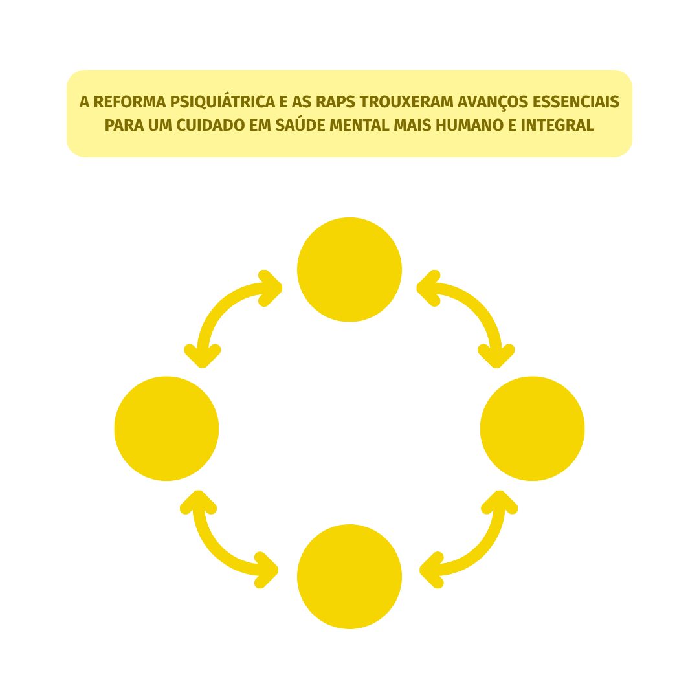
Fonte: elaboração das autoras (2025).Criar políticas de saúde mental que realmente promovam a autonomia e a liberdade das pessoas e que garantam a participação ativa delas nas comunidades é um passo importante para transformar a forma como cuidamos da saúde mental no Brasil. Isso passa por propor práticas mais inovadoras, reconhecer que cada pessoa tem necessidades diferentes e, acima de tudo, manter um compromisso com um cuidado que seja ético, humano e inclusivo (Ferla et al., 2023; Nabarrete; Bastos, 2023; Oliveira et al., 2024).
4.1.1 Entendendo a Rede de Atenção Psicossocial
A RAPS é responsável por oferecer cuidados humanizados, contínuos e acessíveis a pessoas em sofrimento psíquico, inclusive àquelas com problemas relacionados ao uso de álcool e outras drogas. No contexto do sistema prisional, a RAPS deve atuar de forma integrada à PNAISP, garantindo o cuidado em saúde mental de acordo com os princípios do SUS (Brasil, 2022; Conselho Nacional de Justiça, 2023).
A PNAISP assegura o acesso da população privada de liberdade aos serviços de saúde, incluindo os serviços de saúde mental, respeitando as especificidades desse público. A articulação entre RAPS e PNAISP é fundamental para promover o atendimento integral e multiprofissional, especialmente por meio dos Centros de Atenção Psicossocial (CAPS), que oferecem acompanhamento personalizado com apoio familiar e da rede local (Brasil, 2014).
4.1.2 Quem cuida da saúde mental no sistema prisional? Conheça as equipes que fazem a diferença no Sistema Único de Saúde
Você sabia que o cuidado em saúde mental no sistema prisional requer que várias equipes do SUS trabalhem juntas? A Resolução nº 487, de 2023, traz diretrizes importantes para garantir que pessoas com transtorno mental em conflito com a lei recebam acompanhamento adequado e humanizado. Nesse cenário, a equipe de Atenção Primária Prisional (eAPP) é um dos pilares desse cuidado. Ela atua diretamente nas instituições penais, sendo a porta de entrada para ações de promoção, prevenção e cuidado em saúde (Conselho Nacional de Justiça, 2023). Para fortalecer ainda mais esse cuidado, entram em cena as equipes multidisciplinares qualificadas, como aquelas do Serviço de Atendimento à Pessoa Custodiada e do Serviço de Acompanhamento de Alternativas Penais (Conselho Nacional de Justiça, 2023). Juntas, essas equipes constroem pontes entre o sistema de justiça, a saúde e a proteção social, garantindo que ninguém fique sem cuidado, mesmo em contextos de privação de liberdade.
4.1.3 Papel da equipe de Atenção Primária Prisional na promoção da saúde mental
As eAPP têm um papel fundamental nas instituições penais quando o assunto é saúde mental, uma vez que atuam na identificação precoce de transtornos mentais e do uso problemático de substâncias pelas PPL. Portanto, a presença das equipes favorece a percepção precoce dos sinais, o que faz toda a diferença no cuidado (Brasil, 2014).
Além disso, as eAPP são responsáveis pelo acolhimento e acompanhamento de casos leves e moderados, sempre com foco na escuta qualificada e no cuidado contínuo. Outro ponto importante é a promoção da saúde mental e a realização de ações preventivas no ambiente prisional, contribuindo para um ambiente mais saudável e humanizado (Brasil, 2014). Na Figura 2, podemos observar o papel das eAPP na saúde mental das PPL.
Figura 2 - Papel da equipe de Atenção Primária Prisional na promoção da saúde mental
Clique nos ícones de + para acessar o conteúdo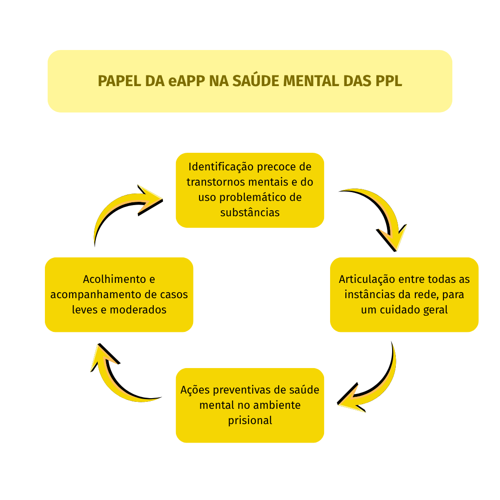
O sofrimento psíquico afeta a vida das pessoas. No contexto da privação de liberdade, isso se intensifica. Por isso, o cuidado em saúde mental precisa ser pensado de forma integrada, contínua e humanizada (Conselho Nacional de Justiça, 2023; Brasil, 2024). No entanto, o que isso significa na prática? Vamos por partes.
O acolhimento já começa na porta de entrada. Quando uma pessoa chega ao sistema prisional, a eAPP precisa estar preparada para oferecer a ela escuta qualificada e fazer uma avaliação inicial, buscando identificar sinais de sofrimento psíquico, transtornos mentais ou uso problemático de álcool e outras drogas.
Claro, quando necessário, medidas emergenciais são tomadas para garantir a segurança da pessoa e da instituição penal. A seguir, fazemos algumas considerações importantes para a garantia de um atendimento integral, humanizado e intersetorial (Brasil, 2022; Conselho Nacional de Justiça, 2023).
Clique para interagir
Registrar os atendimentos, diagnósticos e tratamentos realizados é essencial. Esses dados ajudam a entender o cenário, planejar ações e fortalecer a rede de cuidado dentro e fora da instituição penal. Além disso, permitem dar visibilidade para as necessidades reais da PPL;
O acompanhamento começa com uma avaliação da PPL realizada pela eAPP, que planeja a assistência conforme a complexidade do caso:
- Casos leves ou moderados: são acompanhados na própria Unidade Básica de Saúde Prisional (UBSP) da instituição penal, com intervenções psicossociais e, quando necessário, uso de medicamentos;
- Casos graves: devem ser encaminhados para os serviços da RAPS, como CAPS e serviços de urgência.
Clique nos termos em destaque da coluna Prevenção para saber mais.
Para avaliar a saúde mental, uma sugestão é utilizar o Manual de Intervenções para transtornos mentais, neurológicos e por uso de álcool e outras drogas na rede de atenção básica à saúde (MI-mhGAP). Já ouviu falar dele? Essa ferramenta oferece uma abordagem para lidar com condições e transtornos mentais, neurológicos e relacionados ao uso de álcool e outras drogas (MNS) considerados prioritários utilizando protocolos específicos para auxiliar na tomada de decisões clínicas (Organização Mundial da Saúde, 2018).
Cenários que podem acontecer durante o aprisionamento.
O que fazer em cada situação no sistema prisional?
Para cada cenário, escolha a ou as melhores respostas. Depois, confira o que seria mais adequado segundo as diretrizes do SUS e da Reforma Psiquiátrica.
4.1.4 Serviços da Rede de Atenção Psicossocial
Veja na Figura 3 os principais serviços que fazem parte da RAPS, uma rede organizada para garantir o cuidado integral em saúde mental no SUS. Cada serviço tem um papel específico e, juntos, formam um sistema de apoio contínuo e articulado.
Figura 3 - Pontos da Rede de Atenção Psicossocial
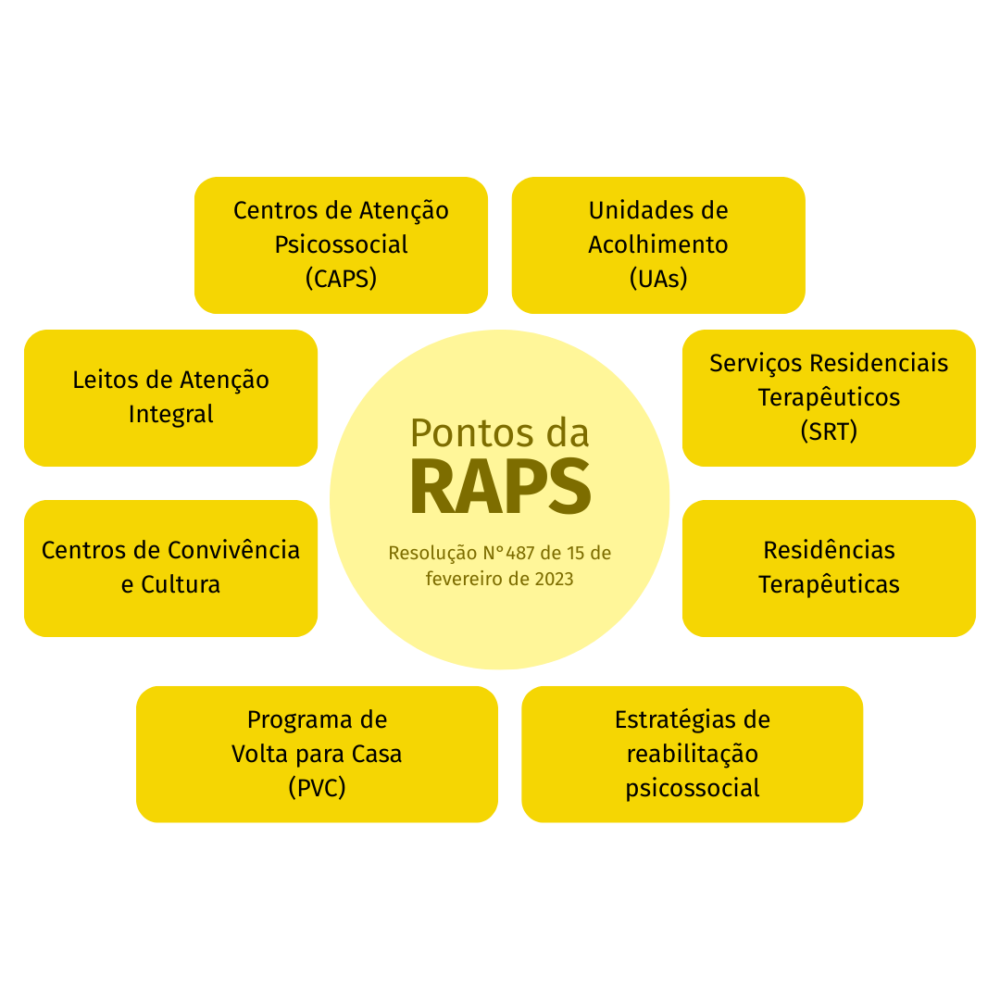
Fonte: adaptado de Conselho Nacional de Justiça (2023)4.1.5 Diretrizes e normativas da Política Nacional de Saúde Mental
A Lei nº 10.216/2001 dispõe sobre a proteção e os direitos das pessoas com transtornos mentais, garantindo a elas tratamento digno e sem discriminação. Nos atendimentos em saúde mental, tanto o paciente quanto seus familiares devem ser informados sobre seus direitos. Dentre eles, destacam-se os direitos de: acessar o melhor tratamento disponível, ser tratado com respeito e humanidade, estar protegido contra abusos e exploração, ter garantido o sigilo das informações médicas e ser tratado no ambiente menos invasivo possível (Brasil, 2001).
O Estado tem a responsabilidade de garantir que as políticas de saúde mental sejam bem implementadas, sempre contando com a participação da sociedade e da família. A internação só deve ocorrer quando os recursos da eAPP forem insuficientes, visando à reinserção social do paciente. Existem três tipos de internação (Brasil, 2001; Carvalho et al., 2024):
Clique para interagir
E se alguém estiver internado há muito tempo e não tiver para onde ir? A lei prevê um plano específico para essas pessoas, garantindo a elas uma alta planejada e um acompanhamento de acordo com a pena da PPL (Brasil, 2001; Carvalho et al., 2024).
4.2 Direitos das pessoas com transtornos mentais: garantias, proteção e um novo olhar para o cuidado em saúde mental
O que diz a legislação sobre saúde mental e o que ainda poderia ser feito?
Clique nas setas para interagir.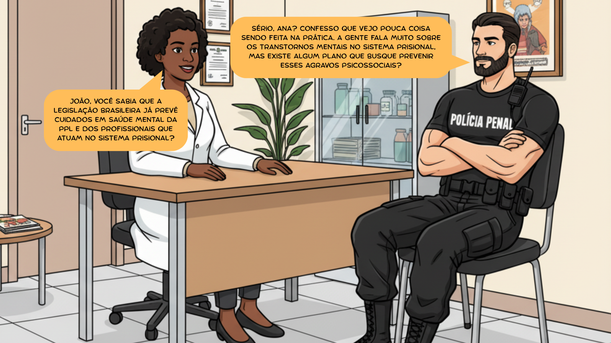
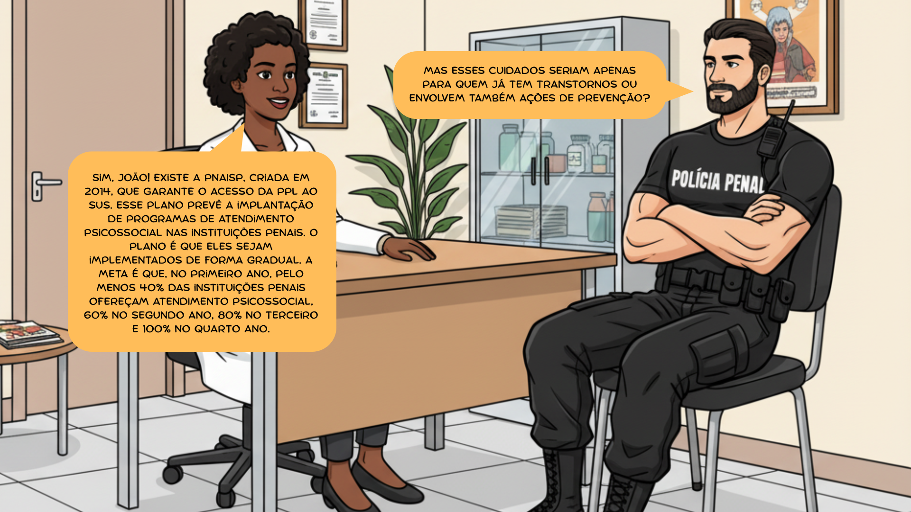
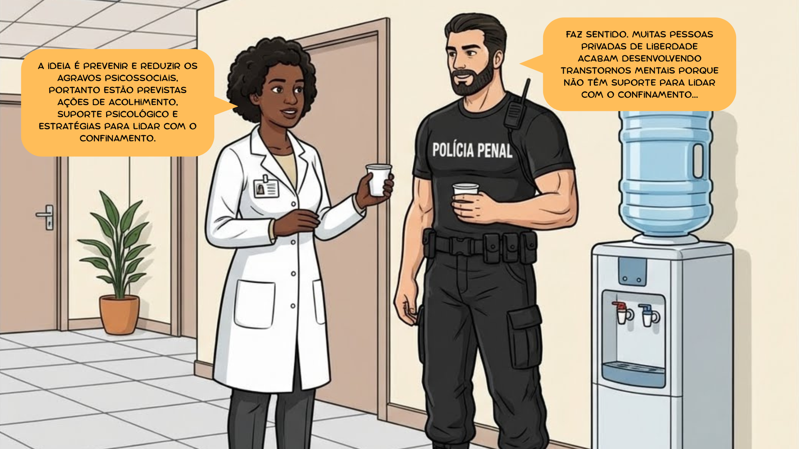
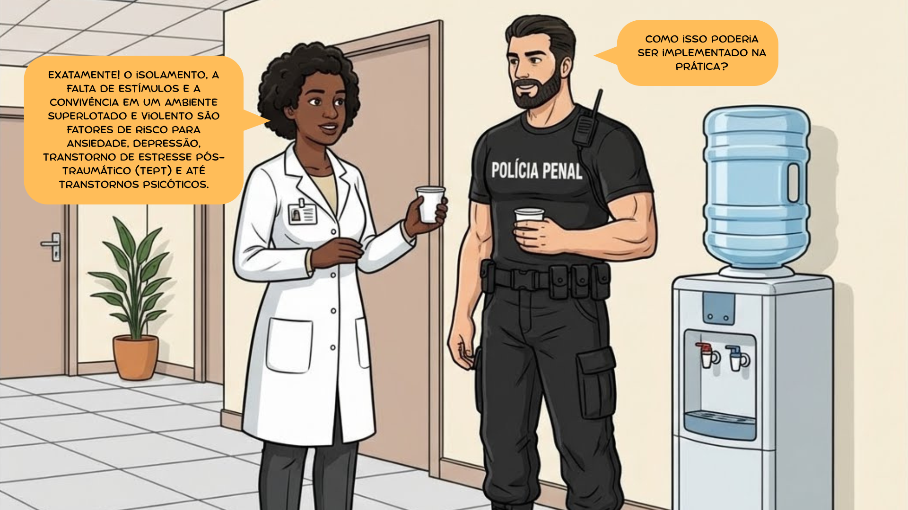
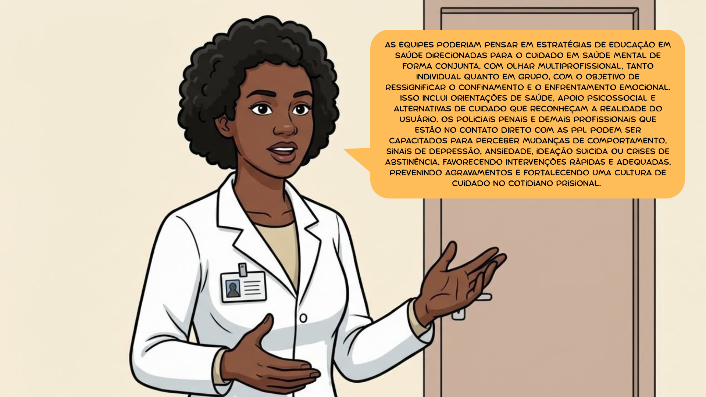
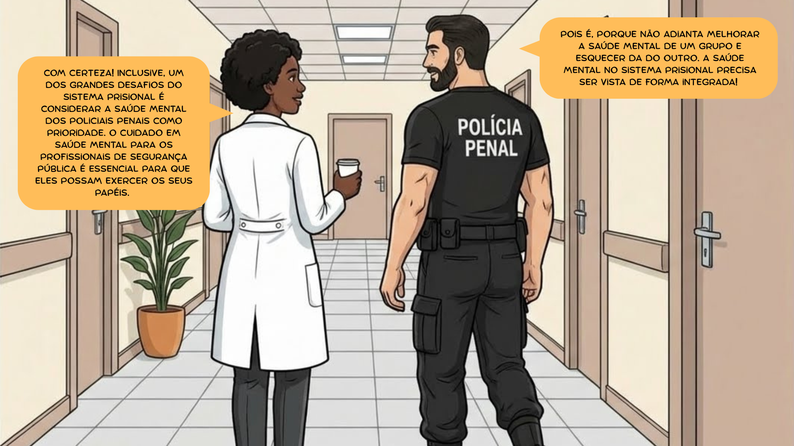
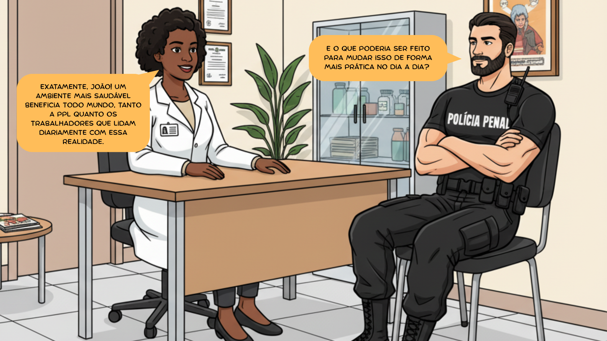
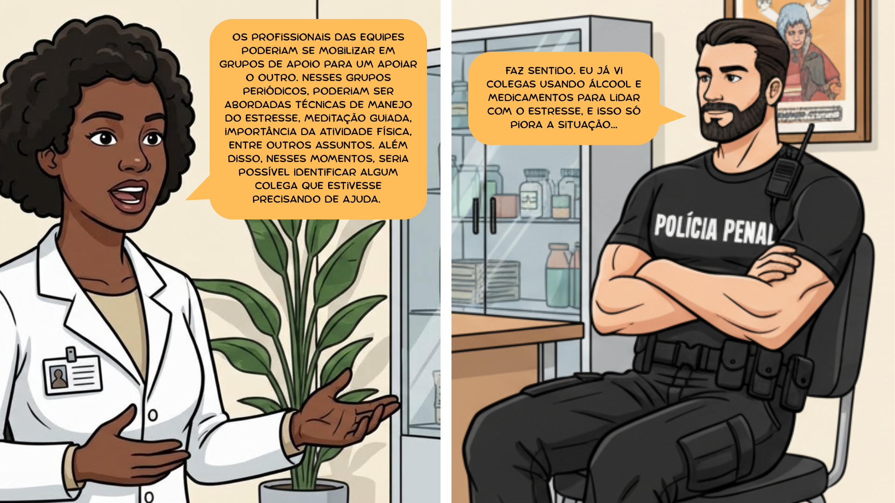
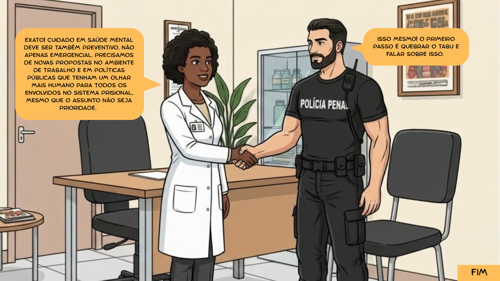
4.3 Condições de vida durante o aprisionamento e seus efeitos na saúde mental
As condições de vida no ambiente prisional constituem um fator determinante para a saúde mental de todas as pessoas inseridas nesse contexto, configurando-se como um elemento central na discussão sobre direitos humanos e dignidade no sistema penitenciário. O confinamento prolongado, a superlotação, as limitações de privacidade, a restrição de movimentos e o distanciamento das redes de apoio social criam um cenário propício ao desenvolvimento ou agravamento de transtornos psicológicos. Essas circunstâncias adversas não apenas afetam diretamente as PPL, mas também exercem influência significativa nos profissionais que atuam diariamente nesse ambiente, criando uma dinâmica complexa de vulnerabilidades que se entrelaçam e se potencializam mutuamente (Cunha et al., 2025; Favril; van Ginneken, 2025).
As condições do ambiente do sistema prisional podem afetar significativamente a saúde mental tanto das PPL quanto dos profissionais que ali trabalham. Você sabia que o acesso aos cuidados em saúde mental nas instituições penais é uma preocupação cada vez mais presente no mundo todo?
Dados nacionais e internacionais consistentemente demonstram que a prevalência de transtornos mentais entre as PPL é muito maior do que na população em geral. Estudos revelam que cerca de 90% dos presos sofrem de algum transtorno mental, vício ou transtorno de personalidade e que muitos deles apresentam comorbidades. Problemas comuns incluem baixa escolaridade, falta de moradia, histórico de violência, traumas, desemprego e uso de substâncias (Gómez-Figueroa; Camino-Proaño, 2022; World Health Organization, 2014).
Reflexão
Você já pensou nos efeitos do aprisionamento na mente?
A pessoa presa não perde só a liberdade. Ela perde o convívio com quem ama, o apoio da
comunidade e
ainda enfrenta
ambientes superlotados, inseguros e muitas vezes violentos. Isso tudo favorece o surgimento ou
agravamento de
transtornos como depressão, ansiedade e TEPT, principalmente quando não há estratégias adequadas
de
enfrentamento
(Gómez-Figueroa; Camino-Proaño, 2022; Cunha et al., 2025).
Quando a pena termina, os desafios continuam...
Sair da instituição penal não significa estar livre do sofrimento. O estigma social, a exclusão
do
mercado de trabalho e o difícil acesso à educação dificultam o recomeço. Mesmo quando há
programas
de reabilitação, muitas vezes não são suficientes para garantir uma nova chance real (Brasil,
2014;
Favril; van Ginneken, 2023).
4.4 Estratégias para redução de danos
O cuidado com pessoas que sofrem de transtornos mentais ou que fazem uso abusivo de álcool e outras drogas deve acontecer em uma rede de atenção à saúde. Aqui vale destacar: o cuidado deve acontecer, prioritariamente, de forma multiprofissional e em rede. A internação só deve acontecer em casos realmente necessários e preferencialmente após a estabilização da crise inicial. A diversidade da realidade prisional brasileira justifica considerar a RAPS como recurso importante no fluxo de atendimento, mas não como primeira resposta a uma crise aguda dentro da cela (Brasil, 2024).
A ideia é clara: evitar, sempre que possível, a privação de liberdade, já que ela pode agravar o sofrimento mental e ainda enfraquecer os laços familiares e sociais, tão importantes no processo de recuperação e reintegração social (Brasil, 2024; Gómez-Figueroa; Camino-Proaño, 2022).
Você sabia que sentir que tem algum controle sobre a própria vida faz uma grande diferença na saúde mental? Pois é, no ambiente prisional isso também é verdade. Quando a pessoa presa percebe que tem alguma autonomia, seu bem-estar pode melhorar. Vamos ver juntos algumas estratégias que podem ajudar a fortalecer esse senso de autonomia nas instituições penais (Favril; van Ginneken, 2023)?
Clique para interagir
Dar voz às PPL em decisões que afetam sua rotina, como escolher os horários de atividades, tarefas ou momentos de lazer, pode fazer com que se sintam mais respeitadas e no controle da própria vida;
Criar programas educativos e de reabilitação que levem em consideração os interesses e as necessidades individuais de cada pessoa presa também é uma ótima forma de promover autonomia, uma vez que mostra que elas têm um papel ativo na construção do próprio futuro;
Oferecer livros, cursos, oficinas ou treinamentos profissionais ajuda as pessoas a desenvolver habilidades e a seguir seus interesses, portanto ter acesso a esse tipo de material pode fazer com que se sintam mais capazes de direcionar seus caminhos;
Ter formas de escutar as PPL, como pesquisas de opinião, rodas de conversa ou até caixas de sugestões, faz com que elas percebam que suas ideias e preocupações têm valor, o que fortalece o sentimento de pertencimento e participação (Favril; van Ginneken, 2023).
Essas ações simples, mas significativas, ajudam a criar um ambiente mais saudável nas instituições penais. Estudos mostram que baixos níveis de autonomia estão ligados a mais sofrimento psicológico. Por isso, quanto mais fortalecermos essas estratégias, mais chances teremos de contribuir para a saúde mental e para o processo de reintegração social das pessoas em privação de liberdade.
4.5 Planejamento intersetorial de ações de promoção da saúde
Responsáveis:
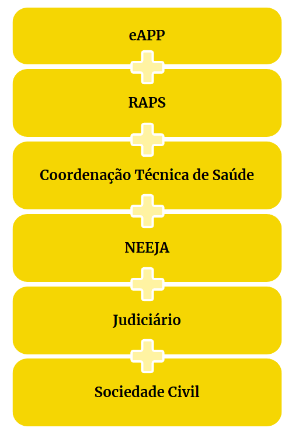
No município de Santa Esperança, localizado no interior do Brasil, uma eAPP da instituição penal identificou um aumento nos casos de sofrimento psíquico, conflitos internos, queixas de isolamento e uso problemático de substâncias entre as PPL.
Diante disso, a eAPP propôs a construção de um Plano Intersetorial de Promoção da Saúde Mental envolvendo diversos atores do sistema prisional. A proposta foi levada à Coordenação Técnica do Sistema Prisional, que passou a articular outros parceiros estratégicos, como a equipe de segurança, os Núcleos Estaduais de Educação de Jovens e Adultos (NEEJA), o Judiciário local e representantes da sociedade civil.
Ações conjuntas definidas:
- Construção participativa de um Plano de Ação, com metas claras e indicadores de avaliação (exemplos: número de oficinas realizadas, redução de crises agudas, adesão a grupos terapêuticos etc.);
- Definição de papéis de cada setor: eAPP e Coordenação Técnica do Sistema Prisional são responsáveis pela mobilização interna; equipe de segurança pelo suporte das ações e garantia da ordem durante as atividades, cuidado compartilhado e formação; Judiciário pelo suporte legal; NEEJA ficou responsável por fazer a ponte técnica; e a sociedade civil por dar apoio nas ações culturais e de formação profissional;
- Criação de Grupos Temáticos com foco em: saúde mental e autocuidado; alimentação e nutrição; prevenção de violências; e resolução de conflitos;
- Elaboração de oficinas terapêuticas e culturais envolvendo arte, escrita, meditação, rodas de conversa e música;
- Promoção de programas de reintegração social e qualificação profissional, com oficinas de panificação, marcenaria e apoio à educação formal;
- Fortalecimento dos vínculos afetivos, com visitas assistidas e atividades de reconexão familiar.
E agora é com você: e se fosse na sua cidade?
Reflita e registre suas ideias:
Clique para interagir
Encerramento da Unidade
Você já parou para pensar em como é desafiador promover saúde no ambiente prisional? Quando abordamos isso, não estamos falando apenas de tratar doenças, mas de pensar o cuidado de forma ampliada, humanizada e que considere toda a complexidade que envolve a vida das PPL.
Conectar serviços, compartilhar responsabilidades e fortalecer as redes de cuidado são passos fundamentais para garantir que a saúde chegue até onde, muitas vezes, ela não consegue chegar sozinha. Pensar juntos, construir juntos e agir em parceria são formas potentes de transformar o cotidiano do sistema prisional.
Você pode muito! Com informação ainda mais!
Parabéns por concluir essa unidade! Clique no botão "retornar" no canto superior esquerdo para continuar os seus estudos.
Referências principais
BRASIL. Ministério da Saúde. Ministério da Justiça e Segurança Pública. Portaria Interministerial nº 1, de 2 de janeiro de 2014. Institui a Política Nacional de Atenção Integral à Saúde das Pessoas Privadas de Liberdade no Sistema Prisional (PNAISP) no âmbito do Sistema Único de Saúde (SUS). Diário Oficial da União, Brasília, DF, 3 jan. 2014. Disponível em: https://bvsms.saude.gov.br/bvs/saudelegis/gm/2014/pri0001_02_01_2014.html . Acesso em: 17 jul. 2025.
CONSELHO NACIONAL DE JUSTIÇA. Resolução nº 487, de 15 de fevereiro de 2023. Institui a Política Antimanicomial do Poder Judiciário e estabelece procedimentos e diretrizes para implementar a Convenção Internacional dos Direitos das Pessoas com Deficiência e a Lei n. 10.216/2001, no âmbito do processo penal e da execução das medidas de segurança. Diário da Justiça Eletrônico: CNJ, Brasília, DF, 16 fev. 2023. Disponível em: https://atos.cnj.jus.br/files/original2015232023022863fe60db44835.pdf . Acesso em: 1 ago. 2025.
ORGANIZAÇÃO MUNDIAL DA SAÚDE. MI-mhGAP. Manual de Intervenções para transtornos mentais, neurológicos e por uso de álcool e outras drogas na rede de atenção básica à saúde. Versão 2.0. Brasília: Organização Pan-Americana da Saúde, 2018. Disponível em: https://iris.paho.org/bitstream/handle/10665.2/49096/9789275719572-por.pdf . Acesso em: 1 ago. 2025.
Referências
BRASIL. Conselho Nacional de Política Criminal e Penitenciária. Plano Nacional de Política Criminal e Penitenciária: quadriênio 2024-2027. Brasília: Ministério da Justiça e Segurança Pública, 2024. Disponível em: https://www.gov.br/senappen/pt-br/composicao/cnpcp/plano_nacional/plano-nacional-de-politica-criminal-e-penitenciaria-2024-2027.pdf . Acesso em: 1 ago. 2025.
BRASIL. Ministério da Saúde. Secretaria de Atenção Primária à Saúde. Departamento de Ações Programáticas. Instrutivo Técnico da Rede de Atenção Psicossocial - Raps - no Sistema Único de Saúde - SUS. Brasília: Ministério da Saúde, 2022.
BRASIL. Ministério da Saúde. Mapa interativo facilita pesquisa por serviços de saúde mental. 2020. Disponível em: https://www.gov.br/pt-br/noticias/saude-e-vigilancia-sanitaria/2020/12/mapa-interativo-facilita-pesquisa-de-servicos-de-saude-mental . Acesso em: 11 set. 2025.
BRASIL. Lei nº 10.216, de 6 de abril de 2001. Dispõe sobre a proteção e os direitos das pessoas portadoras de transtornos mentais e redireciona o modelo assistencial em saúde mental. Diário Oficial da União, Brasília, DF, 9 abr. 2001. Disponível em: https://www.planalto.gov.br/ccivil_03/leis/leis_2001/l10216.htm . Acesso em: 1 ago. 2025.
CARVALHO, M. D. M. et al. Perspectivas da humanização da saúde mental no Sistema Único de Saúde (SUS) brasileiro. Revista Eletrônica Acervo Científico, v. 47, e15953, 2024.
CUNHA, M. B. S. et al. O impacto do sistema prisional na experiência de privação de liberdade. São Paulo: Editora Arché, 2025.
FAVRIL, L.; VAN GINNEKEN, E. F. J. C. Individual and environmental contributors to psychological distress during imprisonment. European Journal of Criminology, v. 21, n. 3, 2023. Disponível em: https://journals.sagepub.com/doi/10.1177/14773708231201726 . Acesso em: 1 ago. 2025.
FERLA, A. A. et al. (org.). Saúde mental coletiva: transoceanizando políticas e práticas locais-globais. Porto Alegre: Editora Rede Unida, 2023.
GÓMEZ-FIGUEROA, H.; CAMINO-PROAÑO, A. Trastornos mentales y del comportamiento en el contexto carcelario y penitenciario. Revista Española de Sanidad Penitenciaria, v. 24, n. 2, p. 70-80, 2022. Disponível em: https://scielo.isciii.es/pdf/sanipe/v24n2/2013-6463-sanipe-24-02-66-es.pdf . Acesso em: 1 ago. 2025.
NABARRETE, L. M. S.; BASTOS, P. R. H. O. A construção e contextualização das políticas públicas em saúde mental no Brasil. Revista Contemporânea, v. 3, n. 8, p. 10182-10202, 2023. Disponível em: https://ojs.revistacontemporanea.com/ojs/index.php/home/article/view/1118/869 . Acesso em: 1 ago. 2025.
OLIVEIRA, L. S. et al. Avanços e limitações das políticas públicas de saúde mental: perspectiva para o futuro. Revista Aracê, v. 6, n. 4, p. 17349-17361, 2024. Disponível em: https://www.researchgate.net/publication/387304269_AVANCOS_E_LIMITACOES_DAS_POLITICAS_PUBLICAS_DE_SAUDE_MENTAL_PERSPECTIVA_PARA_O_FUTURO . Acesso em: 1 ago. 2025.
WORLD HEALTH ORGANIZATION. Prisons and Health. Copenhagen: WHO Regional Office for Europe, 2014.
Minicurrículo das Autoras
Enfermeira. Doutoranda do Programa de Pós-graduação em Promoção da Saúde e Professora da Enfermagem CEPRU/UNISC. Mestre em Promoção da Saúde e Especialista em Enfermagem do Trabalho. Pesquisadora do Núcleo de Pesquisa e Extensão com Foco no Sistema Prisional (NUPESISP/UNISC).
Biomédica pela Universidade Federal de Ciências da Saúde de Porto Alegre, especialista
em
Saúde Coletiva pela
Universidade Federal do Rio Grande do Sul, atuou na Saúde Prisional da Secretaria
Estadual
de Saúde do Rio Grande do Sul
enquanto residente e atua como pesquisadora extensionista na Universidade de Santa Cruz
do
Sul (UNISC) em projetos de
educação em saúde e desenvolvimento de novas tecnologias para o sistema prisional.
Compõe o
Núcleo de Pesquisa e
Extensão com Foco no Sistema Prisional (NUPESISP).
Lattes: http://lattes.cnpq.br/1096438834177966